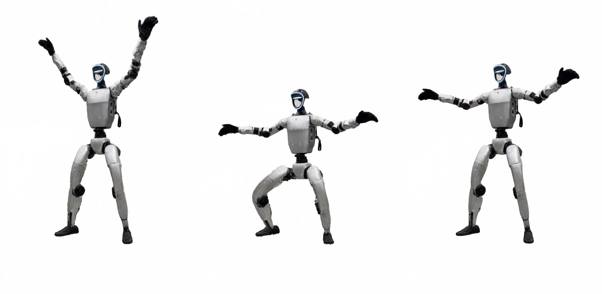
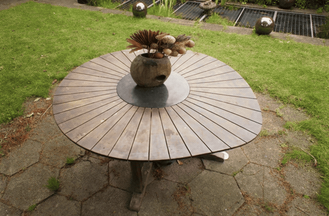
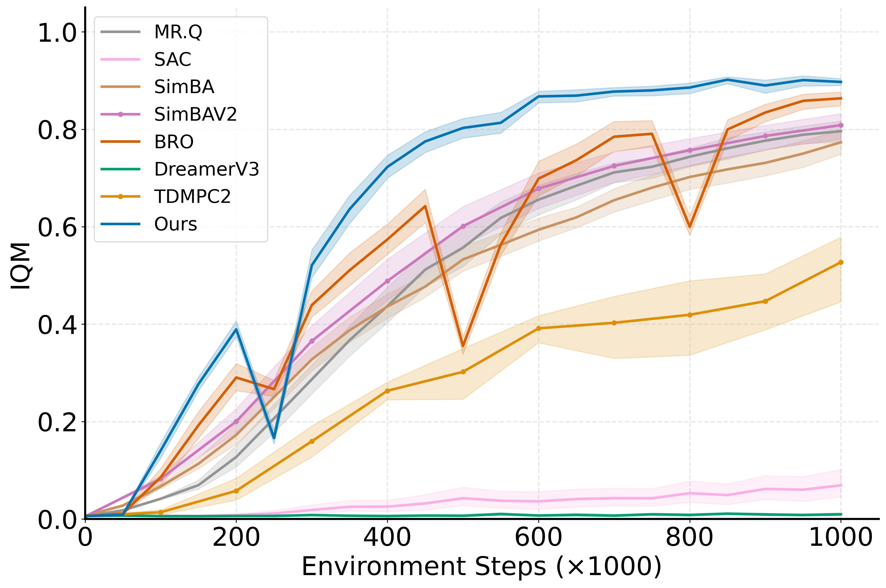

Hi there! I am a Ph.D. student in APEX Lab at Simon Fraser University, supervised by Ke Li. Prior to that, I received my Bachelor's degree in computer science from University of Science and Technology of China.
My research focuses on neural rendering and its applications.
Email / Google Scholar / Twitter / Github
- 3x papers accepted to ECCV 2026!
- PAPR Up-close accepted to 3DV 2026.
- WIMLE accepted to ICLR 2026.
- PAPR in Motion accepted as a Highlight 🌟 at CVPR 2024.
- PAPR accepted as a Spotlight 🌟 at NeurIPS 2023.

Shichong Peng, Yanshu Zhang, Ke Li
arXiv, 2026
arXiv /
@article{peng2026rigpapr,
title={RigPAPR: Rig-Based Animation of Static Neural Point Clouds from a Fixed-Viewpoint Video},
author={Shichong Peng and Yanshu Zhang and Ke Li},
journal={arXiv preprint arXiv:2606.06685},
year={2026}
}
TL;DRRig and animate a static point cloud from a single fixed-viewpoint video
RigPAPR auto-rigs a static neural point cloud and drives it with direct linear blend
skinning from a single fixed-viewpoint driving video, recovering a re-posable 3D asset.
Because PAPR carries no per-primitive shape, the surface re-forms naturally under
articulation, avoiding the joint-boundary gaps and spikes seen in Gaussian-splatting
and mesh-proxy baselines.

Yanshu Zhang, George Shramko, Pratul P. Srinivasan, Ke Li
ECCV, 2026
Project Page / Paper /
@inproceedings{zhang2026pointgt,
title={PointGT: Simultaneous Geometry and Texture Editing for Point-Based Representations},
author={Yanshu Zhang and George Shramko and Pratul P. Srinivasan and Ke Li},
booktitle={European Conference on Computer Vision (ECCV)},
year={2026}
}
TL;DRAttention-based point renderer + deformation aware UV mapping
PointGT combines an attention-based point representation with a learned UV mapping so that
object geometry and appearance can be edited simultaneously, supporting high-resolution
texture edits that persist under non-rigid geometry deformations.

Yanshu Zhang, Shichong Peng, Mehran Aghabozorgi, Alireza Moazeni, Ke Li
ECCV, 2026
Project Page / Paper /
@inproceedings{zhang2026pcore,
title={P-CORE: Self-Supervised Surface Consistency for Point-Based Neural Editing},
author={Yanshu Zhang and Shichong Peng and Mehran Aghabozorgi and Alireza Moazeni and Ke Li},
booktitle={European Conference on Computer Vision (ECCV)},
year={2026}
}
TL;DRSupervise surface prediction of deformed points by the deformed surface
P-CORE lets attention-based point representations undergo large non-rigid deformations
without holes or tears by enforcing that the predicted surface stays consistent before
and after random deformations, enabling zero-shot editing with substantially fewer artifacts.

Alireza Moazeni, Shichong Peng, Yanshu Zhang, Chirag Vashist, Ke Li
ECCV, 2026
arXiv /
@inproceedings{moazeni2026misattribution,
title={Tackling Misattribution in 3D Intrinsic Decomposition via Proximity Attention Point Rendering},
author={Alireza Moazeni and Shichong Peng and Yanshu Zhang and Chirag Vashist and Ke Li},
booktitle={European Conference on Computer Vision (ECCV)},
year={2026}
}
TL;DRResolving misattribution in point-based 3D intrinsic decomposition
Intrinsic PAPR identifies and fixes the misattribution issue in point-based inverse rendering,
where individual primitives learn incorrect appearance despite producing correct aggregated
renders. Using proximity attention point rendering for direct per-point supervision, it enables
accurate, view-consistent albedo and shading editing.

Yanshu Zhang, Chirag Vashist, Shichong Peng, Ke Li
3DV, 2026
Project Page / Paper /
@inproceedings{zhang2026paprupclose,
title={PAPR Up-close: Close-up Neural Point Rendering without Holes},
author={Yanshu Zhang and Chirag Vashist and Shichong Peng and Ke Li},
booktitle={International Conference on 3D Vision},
year={2026}
}
TL;DRHole-free close-up neural point rendering
We extend PAPR for robust close-up neural point rendering and significantly
reduce holes and artifacts while preserving fine details.

Mehran Aghabozorgi, Alireza Moazeni, Yanshu Zhang, Ke Li
ICLR, 2026
Project Page / Code / arXiv /
@inproceedings{aghabozorgi2026wimle,
title={{WIMLE}: Uncertainty-Aware World Models with {IMLE} for Sample-Efficient Continuous Control},
author={Mehran Aghabozorgi and Alireza Moazeni and Yanshu Zhang and Ke Li},
booktitle={The Fourteenth International Conference on Learning Representations},
year={2026}
}
TL;DRMulti-modal world models with uncertainty-aware policy learning for model-based RL
WIMLE learns stochastic, multi-modal world models using IMLE and weights synthetic
transitions by predictive confidence, achieving state-of-the-art sample efficiency
across 40 continuous-control tasks in DeepMind Control, HumanoidBench, and MyoSuite.

Shichong Peng, Yanshu Zhang, Ke Li
CVPR, 2024 (Highlight 🌟)
Project Page / Code / arXiv / Video /
@inproceedings{peng2024papr,
title={PAPR in Motion: Seamless Point-level 3D Scene Interpolation},
author={Shichong Peng and Yanshu Zhang and Ke Li},
booktitle={IEEE/CVF Conference on Computer Vision and Pattern Recognition},
year={2024}
}
TL;DRSeamless point-level 4D motion interpolation
We introduce the novel problem of point-level 3D scene interpolation.
Given observations of a scene at two distinct states from multiple views,
the goal is to synthesize a smooth point-level interpolation between them,
without any intermediate supervision. Our method, PAPR in Motion, builds
upon Proximity Attention Point Rendering (PAPR) technique, and generates
seamless interpolations of both the scene geometry and appearance.

Yanshu Zhang*, Shichong Peng*, Alireza Moazeni, Ke Li
NeurIPS, 2023 (Spotlight 🌟)
Project Page / Code / arXiv / Video /
@inproceedings{zhang2023papr,
title={PAPR: Proximity Attention Point Rendering},
author={Yanshu Zhang and Shichong Peng and Alireza Moazeni and Ke Li},
booktitle={Thirty-seventh Conference on Neural Information Processing Systems},
year={2023}
}
TL;DRReconstruct and render point clouds using attention
PAPR is a point-based surface representation that uses proximity attention to
interpolate between nearby points to rays for rendering high-quality images,
enabling non-volume-preserving geometry deformation by directly adjusting point
positions, and, unlike 3D Gaussian Splatting, it avoids creating holes while
preserving texture details after deformation.
|
Template adapted from Qianli Ma's websites. |